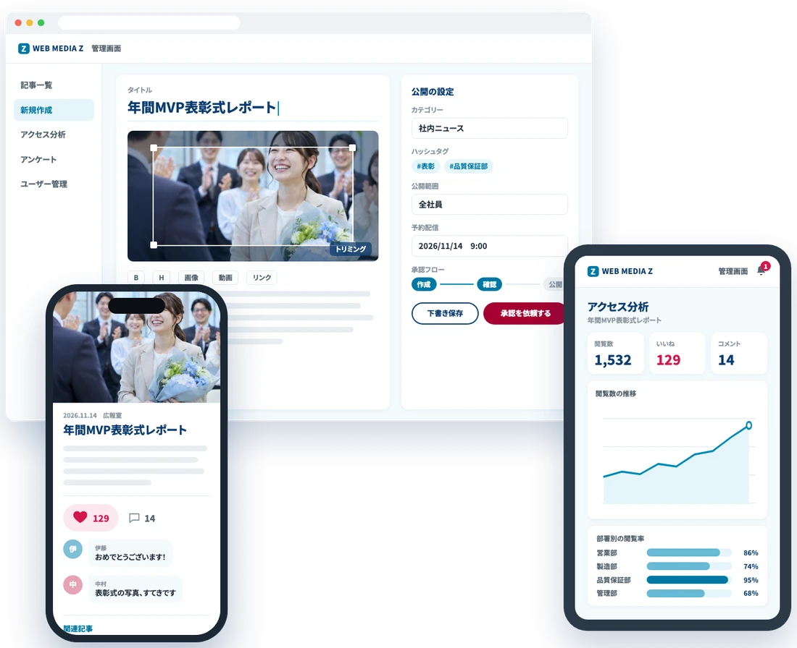
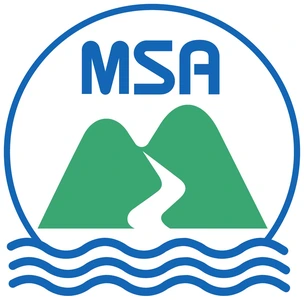
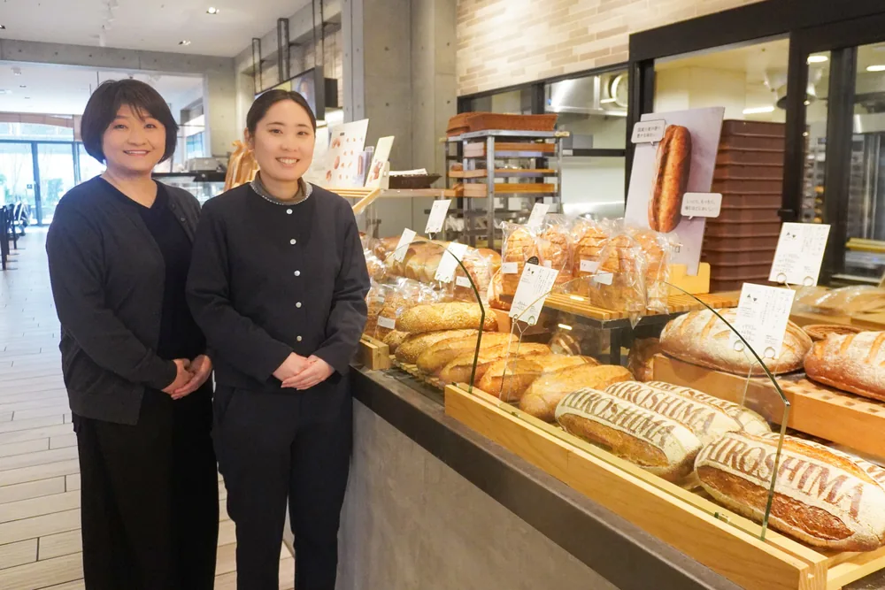

株式会社前川製作所
使いやすさと分析機能で、継続的な更新・改善へ
- 導入前の課題
- 従来のシステムが使いづらく、更新頻度や閲覧数も低下。
- 導入後の変化
- 閲覧状況を可視化し、制作意欲と更新の安定につなげています。確認作業も効率化し、トラブル時の対応も評価されています。
10年超の社内報事業で培ったノウハウで運用をサポート
紙の社内報制作で培った経験をもとに、使いやすいシステムと、コンテンツ制作から運営体制の構築までをご支援。
Web社内報の立ち上げが初めてでも安心して取り組んでいただけます。
※画面はイメージです
社内報に必要なのは、使いやすい仕組みと続けられる運営体制。
WEB社内報「Z」は、機能・セキュリティ・導入前後のサポートで、その両方を支えます。
シンプルな投稿画面で、文章・写真・動画を使った記事を作成。
プッシュ通知で更新を知らせ、いいね・コメントで社員の反応を受け取り、アクセス分析を次の企画に活かせます。
作成・配信・分析まで、日々の社内報運営に必要な機能をひとつにまとめました。

利用者ごとのID・パスワードに加え、権限管理や記事の承認フローを搭載。
IP制限、多要素認証、SSOにも対応し、自社の運用方針に合わせてアクセス環境を整えられます。
※IP制限・多要素認証は無料オプション、SSO連携は有料オプションです。



運営会社のglassyは、ISO27001・ISMSクラウドセキュリティ認証を取得しています。
紙の社内報制作で培ったノウハウを活かし、専任のカスタマーサポート担当が導入前後を支援。
操作方法に加え、「何のために発行するか」「誰がつくるか」「どんな企画を届けるか」から相談できます。

媒体設計・広報体制構築のアドバイスは、初期導入費内で対応。
制作に手が回らない場合は、取材・執筆・撮影などの有償サポートもご相談いただけます。
自社に合う運用方法を、相談してみませんか？
これまで制作してきた紙の社内報を活かしながら、Webへ。
紙とWebの両方を支援するglassyだからこそ、自社の運営体制や社員の閲覧環境に合わせた進め方をご相談いただけます。
紙面ビューワーで社内報PDFを掲載。過去の記事にも、PCやスマートフォンからアクセスできます。
紙面のネイティブデータがあれば、HTML化にも対応。スマートフォンでの読みやすさを整えられます。
全面的なWeb移行だけでなく、紙とWebそれぞれの良さを活かした併用も可能です。紙の社内報制作からWebでの発信まで、まとめてご相談いただけます。
※紙面ビューワーは有料オプションです。HTML化・制作支援の対応条件や費用はお問い合わせください。
記事制作の負担軽減、閲覧状況をもとにした改善、紙からWebへの移行。
それぞれの課題に合わせた、WEB社内報「Z」の活用をご紹介します。
株式会社前川製作所

株式会社アンデルセン・パン生活文化研究所

株式会社サッポロライオン

日産化学株式会社
初期費用・月額費用は、ご利用人数やオプション機能などに応じてご案内します。
社内報の目的や運営体制を伺い、自社に合う機能とサポート内容をご提案します。
これから社内報を始める方も、既存の社内報を見直したい方も。
現在の課題やご希望をお聞かせください。
はい。社内報の目的や企画、運営体制の整理からご相談いただけます。媒体設計・広報体制構築のアドバイスは、初期導入費内で対応しています。
取材・ライティング・写真撮影のノウハウや、原稿・撮影の依頼に使えるフォーマットをご用意しています。操作方法は、納品前後の機能説明会でもご案内します。
個別のID・パスワードでログインできます。ログイン情報の案内に使える名刺サイズのインビテーションカードは、導入時に限り無料で制作しています。利用環境に合わせた案内方法もご相談ください。
IP制限に対応しています。管理者画面・ユーザー画面の両方、またはいずれか一方に制限を設定できます。多要素認証も無料オプションでご利用いただけます。
有料オプションでSSO連携に対応しています。既存のアカウントを利用して、WEB社内報「Z」にアクセスできます。
はい。有料オプションの紙面ビューワーで、紙の社内報PDFを掲載・閲覧できます。ネイティブデータがあれば、スマートフォンで読みやすいHTML化にも対応可能です。紙とWebの制作・運用もまとめてご相談いただけます。
管理画面のダッシュボードでアクセス動向を確認できます。アクセス情報のCSV出力に加え、いいね・コメントなどから社員の反応も把握できます。
はい。有償で取材・ライティング・撮影・サムネイル制作などを承っています。社内で対応する範囲と、外部に依頼する範囲を含めてご相談いただけます。
ご納品は最短10営業日です。ご納品後は、記事の準備や社内への案内などのため、社内公開までに1〜2か月程度の準備期間を設ける企業様が多くなっています。ご希望の公開時期に合わせてご相談ください。
ご利用人数やオプション機能などにより異なります。ご希望の運用方法を伺った上で、初期費用・月額費用を個別にお見積もりします。詳しくはお問い合わせください。
必要な機能も、社内の運営体制も、記事制作の進め方も。
紙の社内報制作で培ったノウハウと、使いやすいWebの仕組みで、立ち上げから日々の運用まで支援します。